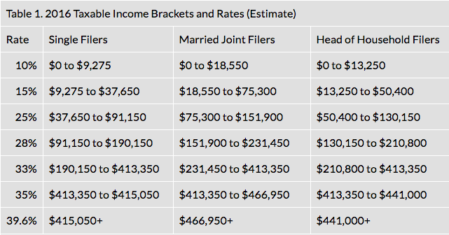
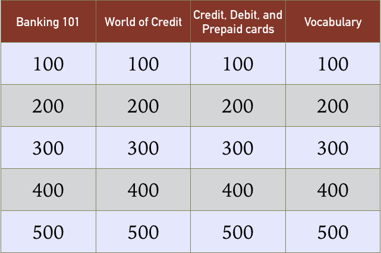

Welcome to

Instructor Introductions and Class Logistics
Choose a handle
A handle will be your personal nickname for this course.

- Choose something with 2-8 letters or numbers
- Don’t use your name or a name anyone has called you before
- Try to make your handle remind you of something you like about yourself
- This handle will be used in your email, portfolios, and our classroom communications
Computer Logistics and Class Outline
Practice Projects
During training, we will constantly be working on practice projects to develop your skills
Group Questions:
- What is a technology that you would want to understand better and know how it works?
- What is a problem you have encountered that you do not know how to solve?
- What is a problem that you have seen that you think you have a solution for?
- Previous Examples: Survivors.io, Project Real Girl
Feedback and Classroom Rules
THIS IS CRITICAL
- Your feedback is really important to us. Let us know how you are feeling and do not be afraid to ask questions.
- The best way to learn many of these skills is to work with partners and to not be too hard on yourself. We will take regular breaks through out the class sessions.
- Let us know if you have to miss a class.
- Please do not use your phone unless it is an emergency or part of the course lesson.
Safe Space Rules
- Respect yourself
- Respect community
- Ouch System
- Be real
- Be comfortable
Objectives for this Training
- OUR GOAL: We are going to work with you to learn and explore many of the tech fields while building the skills to succeed. Our job is to figure out the best fit for your interests and lifestyle.
- YOUR GOAL: You must be willing to push yourself and work hard. Learn as much as you can and always speak up.

Examples of Tech Jobs and Roles
What do different people do in technology?
Jobs in technology are extremely varied and can be suitable for people with a lot of different interests and personalities.
Our Client Work
Long term options:
- Contract Development Work
- Lifelong learning
- AnnieCannons community
- Different roles for you in the organization
- Teaching Opportunities
- Technology Company Jobs
Women in Computer History
- Ada Lovelace was the first human to create an algorithm intended to be carried by the first modern computer, the Analytical Engine. Because of this, she is often regarded as the first computer programmer.
- Grace Hopper was the first human to create a compiler for a Programming language and the first programmer of Mark I computer, an electro-mechanical computer based on Analytical Engine.
- Katherine Johnson is an African-American physicist, space scientist, and mathematician who contributed to the United States' aeronautics and space programs with the early application of digital electronic computers at NASA.
Introduction to Computers
The Fundamental Concept
Computer = power + simplicity

Introduction to Computers
Code = series of instructions a computer is told to run.
What is the role of the computer programmer?

Software Downloads
Chrome
To install (for Mac):
- Go to https://www.google.com/chrome/browser/desktop/ in Safari, or Google “Google Chrome”
- Download the browser
- Click “Accept and Install”
- Open in your Downloads
- Drag the icon into your Application folder

Software Downloads
Slack: We will use Slack for most of our communication in this class.
To install:
- Mac: Go to the Apple App Store (blue and White “A” button in your dashboard) and search for Slack. Windows: Go to slack.com/ssb/downloads-win
- Download the application
- Drag the icon into your Application folder
- Our team name is anniecannonsinc.com. Please use your own handle.
Typing
Learning how to touch type efficiently is one of the most important skills you can gain as a software developer. It takes practice.
Our typing course: Typing.com

Typing Tips
The standard keyboard is called the QWERTY keyboard because of the letter sequence on the keyboard. It is important to have a good typing posture.
- Head up. If your head tilts too much toward the screen it can put a strain on your neck and cause headaches.
- Relax your shoulders
- Keep your elbows close to your body
- Curve your fingers slightly over the keys but keep your wrists flat
- Try to keep yout feet on the floor and avoid crossing your legs.
Typing: Hand Placement

Typing Goals
- Use all 8 fingers to type (use your thumb for the spacebar)
- Use the proper fingers on the proper keys.
- Always return your fingers to the home row when resting. Your left index finger goes on the F key, and your right index finger goes on the J key. The rest of your fingers line up next to each other.
- Notice how the F and J keys have bumps on them. Be able to use the bumps to place your fingers on the home row without looking at the keyboard.
- Be able to type without looking at the keyboard
Personal Finance
Key Principles
- Spend money mindfully. This means to think carefully about the ways that you are spending money and to stop, drop and think before you purchase something.
- Save money. This means that each month, for your own financial safety and wellbeing, it is incredibly important that you are saving some money. It does not need to be a large amount of money; it could be a couple of dollars.
- Use financial products safely. A financial product can be anything from a credit card to a checking account or a savings account. There are a ton of different products in the market, and you need to be able to make smart decisions so you are financially secure.
Important Rules
The Pillars of Successful Financial Planning
- Pay yourself first. (Save 20% of your income.)
- Spend less than you make.
- Follow the 20/30/50 rule. Put 20% into savings, 30% toward your wants and desires, and 50% towards your needs.
Mindful Spending
What are examples of mindful spending?
What are spending triggers?
- Spending triggers can be anything from an emotional trigger, such as when I am sad, I buy chocolate, or when I am happy, I buy a new pair of shoes.
- Spending triggers can be context-based, such as spending more money when you’re with your friends, or can be geography-based, such as purchasing a snack every time you pass by Walgreens, or can be calendar-based, such as spending a lot of money at the beginning of the week or near the holidays.
Stop, Drop, and Wait it out!
(Be sure you unsubscribe from promotional emails, if online shopping is a problem.)
Savings Calculation
Jessica will be spending $1,300 on rent per month. At the new firm where she has found employment, she will receive a paycheck for $1,650 every two weeks.
- How much money is Jessica making each month?
- After rent, how much money will Jessica have?
Jessica spends $80 on groceries per week. Each month, she spends $100 on her cable bill and $100 on her electricity bill.
- How much money does Jessica have leftover, after she has spent money on rent, groceries, and bills?
- How much of every paycheck is Jessica putting into the bank?
Interest
What is interest?
What is compound interest?
STRONGLY RECOMMENDED: Khan Academy's Finance Course
Credit Score Checklist
- Pay your bills on time.
- Pay down your debts -- and consider charging less.
- Don’t be afraid of credit counseling.
- Good places to find your credit score (Consumer Financial Protection Bureau).
Taxes
1099 Contractor
What is an independent contractor?
- Normally, employers file a W-2 form for you.
- If you receive tax form 1099-MISC for services you provide to a client as an independent contractor and the annual payments you receive total $600 or more, your tax filings are different than when you only earn income as an employee.
1099 Contractor
Taking Deductions
- As an independent contractor, you can claim deductions for certain kinds of expenses from what counts as your "taxable income".
- The deductions may be for business expenses or certain kinds of living expenses, like your health insurance or glasses.
- For example, the cost of sophisticated computer software is an ordinary and necessary expense for a freelance graphic designer. (Hiring a limousine is not.)
- What about your rent? Phone bill?
- Keep track!
1099 Contractor
Reporting Net Income and an Independent Contractor
- You will file a (1) FORM 1040 and (2) "schedules" that detail certain expenses.
- For example, on "Schedule C or "C-EZ", you will calculate your net profit by taking your total self-employment income, including any earnings not included on a 1099-MISC, and subtracting the deductible business expenses you incur.
- The final "net income" figure must be transferred to Form 1040 and combined with your other earnings to calculate your tax obligations.
1099 Contractor
Other things to keep in mind
- You must pay Social Security and Medicare taxes ("Self-employment taxes").
- You may have an obligation to make up to four estimated tax payments to the IRS during the year. The amount and frequency of your estimated payments depends on how much income you earn, the tax withheld from other employment income, and the method you choose to calculate your estimated taxes. Use Form 1040-ES to figure out your estimated tax obligations.
Online Financial Tools
Personal Finance Jeopardy
Technology Brainstorming

Computer Basics
Vocabulary Review
Computer Hardware
Goal: Understand the Big Picture
What's Inside Your Computer?

Parts of the Computer: Piece by Piece
Motherboard
Directs information to and from computer parts plugged into it

Parts of the Computer: Piece by Piece
CPU: Central Processing Unit
The electronic circuitry within a computer that carries out the instructions of a computer program by performing the basic arithmetic, logical, control and input/output (I/O) operations specified by the instructions.

The Original CPU

Parts of the Computer: Piece by Piece
CPU: Central Processing Unit (Continued)
- Clock speed (Cycles per second)
- Cores (Think “lanes on a highway”. This matters because it enables parallel computing.What might we want to process in parallel?)
- 64-bit vs. 32-bit
- Cache (Mini-memory on CPU for frequently accessed information)
Parts of the Computer: Piece by Piece
Graphics Card
- This houses the dedicated GPU (Graphics Processing Unit), which is a specialized processor used for monitor displays (and VR!) and other visual tasks

Parts of the Computer: Piece by Piece
BIOS
- The program a personal computer's microprocessor uses to get the computer system started after you turn it on. It also manages data flow between the computer's operating system and attached devices such as the hard disk, video adapter, keyboard, mouse and printer.
How is Information Stored?

What's the Difference Between Memory and Storage?
Memory
- MEMORY is readable with equal speed no matter where it is LOCATED. Files in active edit and edits are held here prior to a “save.” You lose it if the machine crashes! It can be stored in the following ways: 8GB, 16GB, 24GB
Storage
- STORAGE takes time to “spin up” but stays when the power is off. Files save here when you hit “save.”
- HDDs (Hard Disk Drives) - uses a spinning magnetic disk
- SSDs (Solid State Drives) - use a grid of electrical “cells in “pages” in “blocks”. (SSD always writes to a new block. When a block stays unused long enough, SDD commits it to HDD and erases the entire block.)
What happens when a file is "deleted"?
Watch herePorts --- Or are they?

Identifying Inputs to Your Computer

Time to Break It Apart!

Introduction Software: The Operating System

What does an Operating System do?
- Provide an environment in which a user can execute programs
- Make the computer system easy to use
- Allow users to use the computer hardware in an efficient manner
Kernel, Assembler, and Firmware -- oh my!
- Kernel constitutes the central core of a computer's operating system. It has complete control over everything that occurs in the system. It is the first program loaded on startup, and then manages the remainder of the startup, as well as input/output requests from software, translating them into data processing instructions for the CPU.
- The Assembler is a program that takes basic computer instructions and converts them into a pattern of bits that the computer's processor can use to perform its basic operations.
- Firmware is a type of software that provides control, monitoring and data manipulation for device application. (It tells everything *how* to run)
Different types of Operating Systems

Hardware and Software
Watch this!Pulling this all together..

Computer Files
Remember: A computer file is a resource for storing information, which is available to a computer program and is usually based on some kind of durable storage.
A file is "durable" in the sense that it remains available for other programs to use after the program that created it has finished executing.
Common file extensions include EXE, DOC or DOCX, XLS, TXT, PDF, and MP3
Computer File Format

Using Different Operating Systems
Now that we know how a computer works, let's learn how to navigate the two main operating systems: Mac and Windows. AND learn how to operate some of the most useful software products/applications.
Apple

Apple is an American technology company headquartered in Cupertino, California.
Its hardware products include the iPhone smartphone, the iPad tablet computer, the Mac personal computer, the iPod portable media player, the Apple Watch smartwatch, and the Apple TV digital media player.
Apple's consumer software includes the macOS and iOS operating systems, the iTunes media player, and the Safari web browser.
It's online services include the iTunes Store, the iOS App Store and Mac App Store, and iCloud.
Using the Mac OS X
Important Component of the OS
- Desktop
- Finder
- Spotlight
- Dashboard/Launchpad
- Users
- The Dock
Inside the Folder System
- Applications
- Library
- System
- Users
- Home Folder
The Home Folder
- Desktop
- Downloads
- Movies, Pictures, Musics
- Documents
- Public

What Really Happens When You Install An Application?
- Download the file (What type of file is it?)
- Click on the file and follow the prompts (What are you being asked?)
- Drag the file to your applications (What is happening here?)

System Preference and Key Shortcuts: Your New Friends
A tour through the customizable features
Remember! The keys (and names for keys) on a Mac are different from other computers.
Apple Specific Apps
- iTunes
- Messages
- Keynote
- FaceTime
- Garage Band
- iMovie
- iBooks
- Notes
- Using your Apple ID
Software Updates
What you need to know:
- Current Version: Mac OS X El Capitan
- When to update: Whenever you are prompted by the Apple Store. (Note: when an upgrade is released, there may be bugs, so check regularly to see if there are fixes. New upgrades also take memory.)
- Where to find the updates: In the App Store (in your dock), there is a tab for Updates.
Microsoft (Windows Operating System)
Microsoft, an American multinational technology company, headquartered in Redmond, Washington.
It's best known software products are the Microsoft Windows line of operating systems, Microsoft Office Suite, and Internet Explorer and Edge web browsers.
Its flagship hardware products are the Xbox game consoles and the Microsoft Surface tablet lineup.
Personal Computers (PCs)
HP, Dell, Lenovo, Toshiba, Apex, IBM
Companies that make CPUs: Intel, AMD, VIA

Windows 7 Operating System
Important Components of the OS
- Desktop
- Start Menu
- Windows Explorer
- Control Panel
- Windows Installer
Windows System: Files and Hard Drives
- Favorites
- Desktop
- Downloads
- Recent Places
- Libraries
- Documents
- Musics, Pictures, Videos
- Home Group, Network
- Computer

Windows Specific Software
- Windows Media Player
- WordPad
- Paint
- Adobe Reader
- Photo Pro Tools
- Windows Movie Maker
Software Updates
What you need to know:
- Current Version: Window 10 (our systems on Windows 7)
- When to update: When you would like. (Note: upgrades are about $120, and Windows 10 has a much different user interface than 7.)
- Where to find the updates: In the Windows store or online.
Gmail and other Email Services
Different Providers

Read more here
Attachments and Tool Bars


Drafting a Solid Email
- Content
- Write a meaningful subject line
- Proofread
- Never Assume Privacy
- Distinguish between formal and informal situations
- Structure
- Line breaks are your friend!
- Signatures
- Formatting
- Use bullets and other tools to make email more clear
- Use hyperlinks when appropriate

Email Examples
(Remember importance of CC and BCC! And beware of REPLY ALL)

More information on Email Composition
Click HereGoogle Hangouts
Hangouts are being used more and more in business for communication and visual meetings.
- Starting a Hangout
- Joining a Hangout
- Inviting People To a Hangout
- Sharing your Screen
- Apps in the Hangout
Word Processing
What do we use it for?
What are the most common Word Processors?
Which will we be using in class?
Exploring Google Drive

Click Here
Google Docs
- Create documents
- Most formatting supported
- Share & collaborate
- Track changes
- Use citations
- Export to .docx, .pdf and others
- Works just like Microsoft Word
Important Note on Saving a File!
SAVE
- This is used when you first create a file. Before you have saved it the first time, your file generally has the name "untitled1" or “Document1”. You must save a file in order to be able to retrieve it again at a later date.
- Choosing the Save command once you have already saved a document does not require you to rename the file (you will not see a dialog box).
- HINT: Using Save...you always end up with one file.
Important Note on Saving a File!
SAVE AS
- If you wish to save your changes to a file, but you also want to keep the original, use the Save As command. You will be required to rename the file...two files with the same name cannot reside in the same folder (a dialog box will appear).
- Save As is handy if you want to amend a document and keep the original, but also save a copy with the changes.
- HINT: Using Save As...you end up with two files, unless you replace the original when asked through a dialog box.
Google Docs Exercise #1
Handbook Entry
Google Docs Exercise #2
- Retrieve the .pdf file from Slack
- Convert this to a file that you can edit in Google Docs
- Make the changes listed
- Save the file as a PDF and send to your instructor
Google Docs Exercise #3
- Retrieve the .pdf file from Slack
- Convert this to a file that you can edit in Google Docs
- Make the changes listed
- Save the file as a PDF and send to your instructor. Note: you will later build this out into a website
Google Docs Exercise #4
Tables
- Retrieve the .pdf file from Slack
- Follow the instructions listed.
- Save the file as a PDF and send to your instructor.
Google Sheets vs. Excel
What you need to know
Reading Spreadsheets
Read hereOrder of Operations Activity
Google Sheets Exercise
Creating your household budget
Requirements
- Include all household spending and classify into different groups
- Have separate sections for what is coming in and what is going out
- Text formatting
- Using a Header
- Use of one or more functions
- You can use a template for reference
Google Slides vs Keynote
Introductions
Creating a Pitch Deck
You will be creating "pitch" for your software idea. This will be presented to the class with your slideshow.
Start here for examplesOther Google Tools
- Calendar
- Forms
- Contacts
- Translate
What is the Internet?
A Closer Look At Fiber
- These days fiber connections are built by MANY really rich people/companies who are going to make a profit from establishing fast connections (like Google or Verizon). Also, Governments that will benefit from speeding up connections.

A Closer Look At Fiber
Check out this underwater map!
The Web

Clients
Clients are the computer that access the web in any way.

What's different across these devices?
Browsers
A software application for retrieving, presenting, and traversing information resources on the World Wide Web. An information resource is identified by a Uniform Resource Identifier (URI/URL) and may be a web page, image, video or other piece of content. Hyperlinks present in resources enable users easily to navigate their browsers to related resources.

Browsers
Various companies and organizations provide browsers, and each browser varies in how it displays webpages.

Current Browser Versions
Browser Usage
Browser popularity varies year by year. Developers must decide which browsers they want their webpage to work well in. Current Browser Stats

Chrome
Chrome has a lot of great features (and it is the only browser not to be hacked!)
Check out the Chrome Extensions (specifically Pocket and Last Pass) by googling Chrome Extentions
Browser ---> Server

Servers
- Servers are just programs running on a computer that serve up content.
- Sometimes they serve up static files, and are exposed like a file system.
- Sometimes they can be scripted using "server-side" programming languages (PHP, Python, Perl, Java, etc.) to serve more dynamic pages.
Google Data Centers
Step inside a Google Data Center
How does Search work?

Going beyond the search engine
What are other resource sites on the Internet?
- Wikipedia (Pros and Cons?)
- Yelp
- News Sites
- How Stuff Works
More about the Internet
Finding my IP Address
Go to www.whatsmyip.org
Remember!
There is no “GOOGLE.com” that information can travel to. All addresses inside the Internet are actually combinations of numbers, rather than names.
It’s kind of like your telephone. You may call someone by selecting “Grandma’s Cell” from your address book, but underneath, it’s really dialing a ten-digit number.
Let's look at some common websites

Packets and Routing
Watch here! More on PacketsHTTP and HTML
How information really travels on the Internet
Watch hereWhat is an ISP (Internet Service Provider)?
An ISP is a company that provides Internet access for customers. Your computer connects to the Internet Service Provider (ISP), then to the Internet

Key Terms on the Web
Review Exercise
Cybersecurity and Safety
Bad things happen sometimes..
- Malware: trojans, viruses, worms, rootkits, spyware, adware
- Trickery: phishing, spoofing
- Slowness or Blue Screen of Death (BSOD)
- Losing data [dead hard drive, corrupt files]
- Cyberbullying/Stalking
Viruses
A virus is malicious code that hides in another file. It requires user action (opening a file) to execute and spread.
Actual damage can be caused varies by virus. Today, most viruses attempt to take control of your computer to do tasks designated by the virus author. Owners of these "botnets" often sell your computer's resources to do a variety of illicit activities
Online Safety Exercises
(In you handbook)
Staying Safe Online
Code WarsCybersecurity
Cybersecurity 101Cybersecurity
The Secret Lives of HackersWhat is Encryption?
Watch here.Hacking Passwords
There are MANY methods - so keep your passwords safe and long! For now, a few examples:
- Write a program that tries every combination of letters and numbers.
- Use a “key logger,” wait until you type your password, and then try it (or try every thing you typed WAY faster than you typed it)
- Hijack the “autocomplete” feature on your own computer (like tell it to autocomplete when you didn’t) - sometimes it’s stored your password from a less secure site.
Test Your Skills
Click herePrevention
- Anti-Virus Software: Avast, Avira, Avg, Sophos, etc.
- Leave at least 15% or more of your hard drive free (you can use free tools like Dropbox as well)
- Backup your hard drive on a regular basis!!!
- NEVER open suspicious email
- Super, awesome passwords
Computer Programming: Key Concepts
One of the most magnificent structures in the computer science world is the function.
Functions (sometimes called procedures) are mini programs that you can use over and over inside of your bigger program.
Functions are pieces of code that you can call over and over again.
Exercise!
- Look up the lyrics to your favorite song and find a YouTube video of the song.
- Put the lyrics in a new Google Doc.
- Highlight the CHORUS each time it repeats. (Some songs will work better than others.
- After the first chorus, delete the remaining choruses and put "CHORUS" instead
Functions
- Efficiency
- Easy to correct problems in the code.
- Able to use the code in other projects easily.
- Use a language to express a solution to a problem.
Problem Solving
This method is helpful for programmers
- Understand the problem—read or listen to the problem statement.
- Make a plan to solve the problem—use pictures, charts, graphs, systematic lists, objects,or act out the solution to help you devise a plan to solve the problem (In Computer Science, we call this plan an algorithm.)
- Carry out the plan—once the plan is conceived and understood, follow the plan. If you have planned well, this is the easy part.
- Review and reflect on how the problem was solved—once the problem is solved, reflect on the plan that was used.
Computer Programming: Key Concepts
Conditional statements and loops
What are they?
Do users always want the same things?
Computer Programming: Key Concepts
Algorithms
What is it?
A repeatable process for determining the solution to a problem.
Algorithms in Daily Life
- Finding a fruit in the grocery store.
- Alphabetizing name tags.
- Re-organizing your kitchen to make finding stuff easier.
- Finding keys that you lost.
- Finding something good to watch on TV.
- Washing your car windows.
Create your own algorithm
Design an algorithm for doing the laundry.
More on Algorithms: Your Brain and Your Computer
Computer Science: Key Concepts
Programming Languages
Whether you know 4 commands of a language or hundreds, you will always be constrained by the programming language.
The reason you need to learn how to program is because there isn’t a command to do every little thing; you have to understand the set of things that a programming language can do, and then use your creativity and problem-solving skills to get the computer to do what you want.
Hour of Code
This game helps you work on coding. It teaches the concepts of “functions” and “loops”. Try to complete all of the tasks!
Computer (Artificial) Intelligence
A program passes The Turing Test if a person can have a conversation with a computer and a person and not be able to tell which one is the computer.
Try these programs:
THE END
Thank you for your attention!